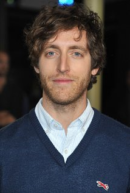
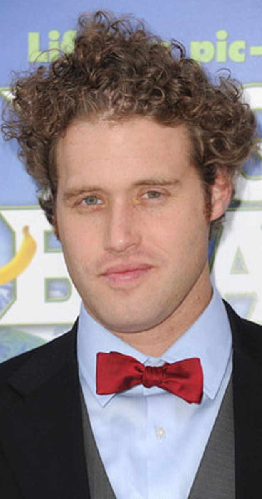
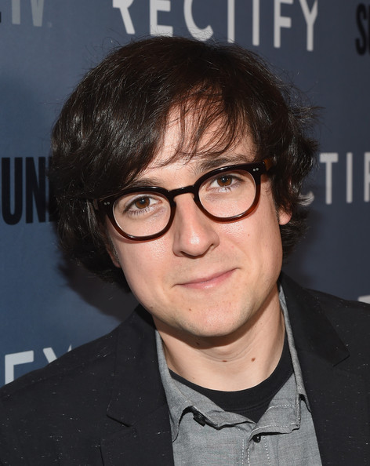

Main Cast
- Thomas Middleditch as Richard Hendricks 
- T. J. Miller as Erlich Bachman 
a supremely confident and arrogant entrepreneur who founded an innovation incubator in his home after the purchase of his airfare collator Aviato. Under the incubator agreement, Erlich owns 10% of Pied Piper, and is later appointed to the company's board of directors after Richard realizes how important Erlich is to the business. Erlich is a frequent user of marijuana. It is revealed in the season 2 finale that Erlich no longer codes because of severe carpal tunnel syndrome.
- Josh Brener as Nelson "Big Head" Bighetti 
a former tenant of Erlich's incubator and Richard's best friend who also works at Hooli. He is clueless and impressionable, but still manages to acquire significant influence as a result of the struggle between Hooli and Pied Piper. After work on Pied Piper commences, Big Head is offered a huge raise and promotion by Gavin Belson to help Hooli develop its copycat software, Nucleus, out of spite and because Richard was forced to limit his staff.